Spring 面试题
什么是Spring
spring是一个轻量级的Java开发框架，用于解决企业级应用开发的复杂性，简化Java开发。
spring底层有两个核心特性：
- AOP面向切面编程
- DI依赖注入
降低开发复杂度的四个策略：
- 基于POJO的轻量级和最小侵入性编程
- 通过依赖注入和切面编程实现松散耦合
- 基于切面和惯例进行的声明式编程
- 通过切面和模板减少样式代码
Spring的设计目标、设计理念、核心
设计目标
为开发者提供一站式的轻量级应用开发平台
设计理念
在JavaEE的开发中，支持POJO和JavaBean开发方式，是应用面向接口开发，充分支持面向对象设计方法。
Spring通过IoC容器实现对象耦合关系的管理，并实现依赖反转，将对象之间的依赖关系交由IoC容器管理，实现解耦。
核心
IoC容器和AOP模块。
IoC容器用来管理对象之间的耦合关系，通过AOP以动态非侵入的方式增强服务。
IoC容器让相互协作的组件实现松散耦合，AOP面向切面编程允许吧应用于各个层的功能分离出来复用。
Spring的优缺点
优点
-
方便解耦，简化开发
spring是个大工厂，可以把对象的创建和依赖关系的维护交给Spring进行管理。 -
AOP切面编程
方便对程序的权限拦截、运行监控等。 -
声明式事务的支持
通过配置就可以完成对事物的管理。 -
方便测试
Spring支持Junit4，可通过注解实现对Spring程序的测试。 -
集成优秀框架
Spring提供了对各种优秀框架的直接支持，如MyBatis等。 -
提供JavaEE开发中难用的API的封装，降低JavaEE API使用难度
如JDBC、远程调用等，
缺点
- Spring是轻量级框架，但是给人感觉大而全
- Spring依赖反射，反射影响性能
- 使用门槛高，不易上手。
Spring的应用场景
JavaEE企业级应用开发，包括：SSH、SSM等。
Spring的价值
- Spring是非侵入式框架，使代码最低限度的依赖框架
- Spring提供一致性编程模型，使应用直接使用POJO开发，与运行环境隔离
- Spring推动面向对象和面向接口编程风格，提高代码复用率和可测性
Spring的组成

Core：提供框架基本支持，包括控制反转和依赖注入功能。Beans：提供BeanFactory，是工厂模式的实现，Spring把管理对象称为Bean。context；基于core构建的封装包，提供框架式的对象访问方法。JDBC：提供JDBC的抽象类，简化jdbc。AOP：提供面向切面的代码实现，可自定义拦截器、切点等。Web：提供针对Web开发的集成特性。Test：提供测试支持，支持Junit，进行单元测试和集成测试。
Spring使用到的5种设计模式
- 工厂模式：BeanFactory就是一种简单的工厂模式，用来创建实例对象。
- 单例模式：Bean默认就是单例模式。
- 代理模式：AOP用到了JDK的动态代理和CGLIB字节码生成技术。
- 模板方法：解决代码重复问题。
- 观察者模式：定义对象键的一种一对多的依赖管理，当对象发生改变，所有依赖于它的对象都要制动更新，如Spring中的Listener的实现
ApplicationListener。
介绍下核心容器 ( spring context 应用上下文 )
是最基本的Spring模块，提供Spring框架的基础功能。
BeanFactory是任何以Spring为基础的核心，Spring框架建立在此模块之上，使Spring成为一个容器。
Bean工厂是工厂模式的一个实现，提供控制反转功能，把应用的配置和依赖从代码中分离开来，最常用的是XML文件中定义加载bean，该容器从xml文件中读取配置，并创建一个完全配置的系统或应用。
Spring中的5种标准事件
-
上下文更新事件
调用ConfigurableApplicationContext接口中的refresh()方法触发。 -
上下文开始事件
调用ConfigurableApplicationContext接口中的start()方法触发。 -
上下文停止事件
调用ConfigurableApplicationContext接口中的stop()方法触发。 -
上下文关闭事件
ApplicationContext被关闭时触发。容器被关闭，所有Bean销毁。 -
请求处理事件
Web应用中，当http请求结束时触发。
Spring中的5大组件
接口-> 定义功能Bean类-> 实体类，get、set方法Bean配置文件-> 包含类的信息和配置AOP-> 提供面向切面编程功能应用程序-> 使用接口
使用Spring的四大方式
- 一个成熟的Spring Web应用程序
- 作为第三方Web框架
- 作为企业级Java Bean，包装现有的POJO
- 用于远程
Spring 控制反转 ( IoC Inversion Of Control)
什么是IoC容器
控制反转即使IoC，它把传统上由程序代码直接控制的对象的调用权交给容器管理，通过容器实现对象组件的装配和管理。
控制反转，通俗说，就是对组件对象控制权的转移，从程序本身转移到外部容器。
IOC负责创建对象，管理对象(通过依赖注入)，装配对象，配置对象，并且管理对象的生命周期。
控制反转的作用
- 管理对象的创建和依赖关系的维护。
- 解耦，由容器去维护具体对象。
- 托管类的产生过程，在类的产生过程中做一些处理，可以直接托管处理，最直接例子，代理。
优点
- IoC把应用的代码降到最低
- 使应用容易测试，单元测试不再需要单例
- 最小代价和最小侵入性使松散耦合得以实现
- IoC容器支持加载服务时的饿汉式初始化和懒加载
IoC实现机制
实现原理：工厂模式+反射机制
interface Fruit {
public abstract void eat();
}
class Apple implements Fruit {
public void eat(){
System.out.println("Apple");
}
}
class Orange implements Fruit {
public void eat(){
System.out.println("Orange");
}
}
class Factory {
public static Fruit getInstance(String ClassName) {
Fruit f=null;
try {
f=(Fruit)Class.forName(ClassName).newInstance();
} catch (Exception e) {
e.printStackTrace();
}
return f;
}
}
class Client {
public static void main(String[] a) {
Fruit f=Factory.getInstance("io.github.dunwu.spring.Apple");
if(f!=null){
f.eat();
}
}
}
IoC 支持 6种 功能
- 依赖注入
- 依赖检查
- 自动装配
- 支持集合
- 指定初始化方法和销毁方法
- 支持回调某些方法（但是需要实现Spring接口，略有侵入）
BeanFactory 和 ApplicationContext 区别
BeanFactory 和 ApplicationContext 是Spring的两大核心，都可当成容器。
ApplicationContext 是 BeanFactory 的子接口。
依赖关系
BeanFactory: 是Spring的最低层接口，包含了Bean的定义，读取Bean配置，管理Bean的加载、实例化，控制Bean的生命周期，维护Bean之间的依赖关系。ApplicationContext：是BeanFactory的派生，拥有它所有的功能外，还有更完整的框架功能：- 继承
MessageSource因此支持国际化 - 统一的资源文件访问方式
- 提供在监听器中注册bean的事件
- 同时加载多个配置文件
- 载入多个（有继承关系）上下文，使每个上下文都专注于一个特定的层次，如应用的web层。
- 继承
加载方式
BeanFactory: 采用延迟加载来注入Bean，当使用到的时候才对Bean进行加载实例化。这样如果Spring配置有问题，那么就不会在启动时发现，直到第一次调用getBean()才会抛出错误。ApplicationContext：容器启动，一次性加载所有的Bean，如果Spring配置错误，可以直接发现。因为ApplicationContext启动后预加载的所有的Bean，所以在需要用的时候直接调用就可以了不用等待。- 相对于
BeanFactory，ApplicationContext唯一不足：占用内存空间，因实例较多的Bean，启动较慢。
创建方式
BeanFactory: 编程式创建ApplicationContext：编程式和声明的方式创建(ContextLoader)
注册方式
都支持BeanPostProcessor、BeanFactoryPostProcessor
BeanFactory: 手动注册ApplicationContext：自动注册
Spring如何设计容器，BeanFactory 和 ApplicationContext关系
Spring 作者用两个接口表示容器
BeanFactoryApplicationContext
BeanFactory简单粗暴，称为低级容器，可以理解为是一个HashMap，Key式BeanName，Value是Bean实例。通常只提供注册（put）和获取（get），两个功能。
ApplicationContext称为高级容器，因比BeanFactory多了更多的功能，继承了多个接口。如该接口定义了一个refresh方法，刷新整个容器，重新加载刷新Bean。

低级容器实现Spring：
- 加载配置文件，解析成
BeanDefinition放在Map里 - 调用getBean，从
BeanDefinition的Map里拿到Class对象实例化，同时如果有依赖关系，递归调用getBean方法，完成依赖注入
高级容器实现Spring：
当执行refresh方法，刷新整个容器的Bean。
它不仅仅是IoC，同时还支持不同信息源头，BeanFactory工具类，层级容器，支持访问文件资源，支持事物发布，接口回调。
ApplicationContext通常的实现
- FileSystemXmlApplicationContext：从xml文件中加载bean，xml文件的全路径名必须提供构造函数。
- ClassPathXmlApplicationContext：从xml文件中加载bean，正确设置classpath，容器会在classpath里找bean配置。
- WebXmlApplicationContext：从xml文件中加载bean，此文件定义了Web应用所有的bean。
依赖注入
什么是依赖注入
IoC可以用不同的方式实现，主要由依赖注入和依赖查找。
依赖注入就是组件之间的依赖关系由容器来管理，在系统运行期间，由容器将某种依赖关系的目标对象注入到组件中，组件不负责查询，只提供普通的Java方法让容器决定依赖关系。
依赖注入原则
组件不负责查找资源或者依赖关系的对象，配置对象的工作交给IoC容器负责，查找逻辑从组件中分离到IoC容器负责。容器负责组件的装配，把符合依赖关系的对象通过属性或构造器传给需要的对象。
依赖注入优势
- 查找定位操作与应用代码无关
- 不依赖容器API，可以在容器外使用
- 不需要特殊接口，绝大多数对象可以做到完全不依赖容器
依赖注入的不同类型
-
接口注入：因灵活性和易用性较差，Spring4被遗弃。
-
Setter方法注入：通过容器触发一个类的构造器实现。
-
构造器注入：容器调用无参构造器或者无参static工厂方法实例化bean后，调用bean的setter方法。
构造器注入和Setter注入区别
| 构造器注入 | setter注入 |
|---|---|
| 没有部分注入 | 有部分注入 |
| 不会覆盖setter属性 | 会覆盖setter属性 |
| 任意修改都会创建一个新实例 | 任意修改不会创建新实例 |
| 适用于设置很多属性 | 适用于设置少量属性 |
Spring 面向切面编程 ( AOP )
什么是AOP
OOP面向对象编程，允许开发者定义纵向关系，并且适用于定义横向关系，导致了大量代码重复，不利于各模块重用。
AOP面向切面编程，可以认为是OOP的补充，把与业务无关，却对多个对象产生影响的公共行为和逻辑，抽取并封装成可重用的模块，模块被明明为切面(Aspect)，减少代码重复，降低耦合度，提高系统可维护性，可用于权限认证、日志、事物处理等。
Spring AOP 和 AspectJ AOP 区别，AOP的实现方法
AOP的实现在于代理模式，主要分为动态代理和静态代理。
- AspectJ AOP：静态代理的增强，即AOP框架会在编译时生成AOP代理类，编译时增强，在运行时就时增强后的AOP对象
- Spring AOP：使用动态代理，AOP框架不会在编译的时候生成文件，而是在每次运行的时候在内存中生成临时的AOP对象，其中包含了目标对象的全部方法，在特定切点做增强处理。
JDK动态代理和CGLIB动态代理区别
Spring有两种动态代理方式，JDK动态代理和CGLIB动态代理
- JDK动态代理：只提供接口实现类，不提供类的代理
- CGLIB动态代理：提供类的代理，主要针对类的生成子类，覆盖其中的方法进行增强，因为采用继承，所以最好不要声明final，无法继承。
Spring如何选择使用哪种
- bean实现接口，使用JDK
- bean没有实现接口，使用CGLIB
可以通过注解强行使用CGLIB
@EnableAspectJAutoProxy(proxyTargetClass = true)
Spring术语解释
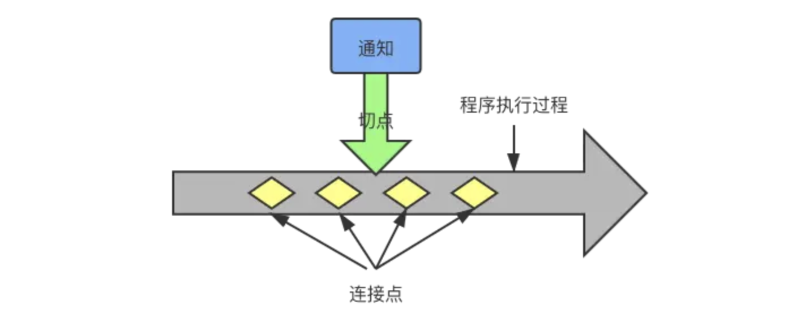
- 通知：定义什么时候，做了什么
- 连接点：程序执行过程中能够执行通知的所有点（方法！）
- 切点：定义在哪里切入，得到通知。切入点一定是连接点
- 切面：通知和切点结合。定义了是什么、什么时候做、在哪里
- 织入：把切面应用到目标对象上，并创建新的代理的过程。分为编译织入、类加载期织入、运行期织入
AOP 5类 通知
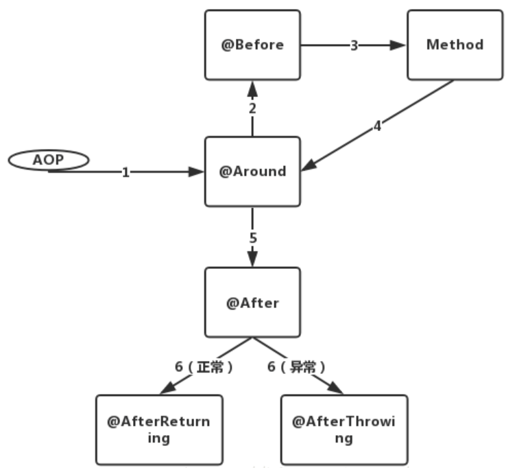
- 前置通知（Before）：在方法执行前通知
- 后置通知（After）：在方法执行完成后通知
- 返回通知（AfterReturning）：在方法执行完后，成功执行返回通知
- 异常通知（AfterThrowing）：在方法执行完成，方法抛出异常返回通知
- 环绕通知（Around）：在被通知的方法调用之前或者调用之后通知
AOP示例
- 定义连接点
@RestController
public class AopController {
@RequestMapping("/hello")
public String sayHello(){
System.out.println("hello");
return "hello";
}
}
- 定义切面（切点+通知）
- 添加
@Aspect注解 @Pointcut在一个切面内定义可重用的切点
- 添加
@Aspect
@Component
public class AopAdvice {
@Pointcut("execution (* com.veal.aop.controller.*.*(..))")
public void test() {
}
@Before("test()")
public void beforeAdvice() {
System.out.println("beforeAdvice...");
}
@After("test()")
public void afterAdvice() {
System.out.println("afterAdvice...");
}
@Around("test()")
public void aroundAdvice(ProceedingJoinPoint proceedingJoinPoint) {
System.out.println("before");
try {
proceedingJoinPoint.proceed();
} catch (Throwable t) {
t.printStackTrace();
}
System.out.println("after");
}
}
Spring Beans
什么时Spring Bean
交给Spring管理的对象，储存在Spring IoC容器中，由IoC容器初始化、装配和管理，通过配置中的元数据创建，如xml文件、注解、Java配置类等。
一个Spring Bean的定义包含什么
- 创建bean
- 生命周期
- 依赖
如何提供配置元数据
- xml配置文件
- 注解配置
- Java配置类
创建 Spring Bean 4种方法
构造函数创建
@Configuration
public class MyConfiguration {
@Bean
public MyBean myBean() {
return new MyBean(); // 使用默认的无参构造函数创建 Bean 实例
}
@Bean
public AnotherBean anotherBean() {
return new AnotherBean(myBean()); // 通过构造函数注入依赖的 Bean
}
}
静态工厂创建
@Configuration
public class MyConfiguration {
@Bean
public MyBean myBean() {
return MyBeanFactory.createMyBean(); // 调用工厂方法创建 Bean 实例
}
}
public class MyBeanFactory {
public static MyBean createMyBean() {
return new MyBean(); // 工厂方法创建 Bean 实例
}
}
实例工厂创建
@Configuration
public class MyConfiguration {
@Bean
public MyBeanFactory myBeanFactory() {
return new MyBeanFactory(); // 实例工厂方法
}
@Bean
public MyBean myBean() {
return myBeanFactory().createMyBean(); // 调用实例工厂方法创建 Bean 实例
}
}
public class MyBeanFactory {
public MyBean createMyBean() {
return new MyBean(); // 实例工厂方法创建 Bean 实例
}
}
注解创建
使用@Component注解或者衍生@Service @Repository @Controller 标记类，让Spring自动扫描、创建bean实例。
Component：通用注解，可标记任意类为Spring的组件。如果不知道属于哪一层可以用。@Service：服务类，针对复杂的逻辑，需要涉及Dao层。@Repository：对Dao层，主要针对数据库相关操作。@Controller：对应MVC控制层，用户接收请求调用Service层返回数据给前端。
@Component
public class MyBean {
// Bean 的实现
}
@Component和@Bean区别
@Component作用于类，@Bean作用于方法
@Component：通过类路径扫面自动装配到Spring容器@Bean：在标有该注解的地方标记生成的Bean，告诉Spring这是某个类的实例，需要用到的时候还给我。@Bean比@Component自定义性更强。- 示例：
相当于@Configuration public class AppConfig { @Bean public TransferService transferService() { return new TransferServiceImpl(); } }@Component无法实现<beans> <bean id="transferService" class="com.acme.TransferServiceImpl"/> </beans>@Bean public OneService getService(status) { case (status) { when 1: return new serviceImpl1(); when 2: return new serviceImpl2(); when 3: return new serviceImpl3(); } }
Spring基于XML注入bean的 4种 方式
- Set方法注入
- 构造器注入
- 静态工厂注入
- 实例工厂注入
Spring Bean 的 五种 作用域
singleton：单例的，在同一Spring IoC容器中只有一个实例。prototype：一个bean的定义有多个实例。request：每次http请求都会创建一个新的bean，只在该http request内有效。session：每次新的session的http请求都会创建新的bean，只在该session http 内有效。global-session：全局的session的http请求都会创建新的bean，只在该 session http 内有效。
单例Bean的线程安全问题
单例Bean不是线程安全的
因spring没有对单例bean进行多线程封装处理。
大部分时候Spring bean 无状态的（Dao类），但是如果有状态，那么就要自己去保证线程安全性。
- 无状态：不会保存数据，无写数据操作
- 有状态：会保存数据，有写数据的操作
- 如果每个线程的全局变量、静态变量只有读操作，一般来说线程安全。
解决方案
- 改变bean的作用域为
prototype，这样每次请求都是new Bean，保证线程安全。 - 使用
ThreadLocal，存放在ThreadLocal中与当前线程绑定。
Bean的生命周期 （重要）
四个阶段
- 实例化
- 属性赋值
- 初始化
- 销毁
实例化 -> 属性赋值 -> 初始化 -> 销毁
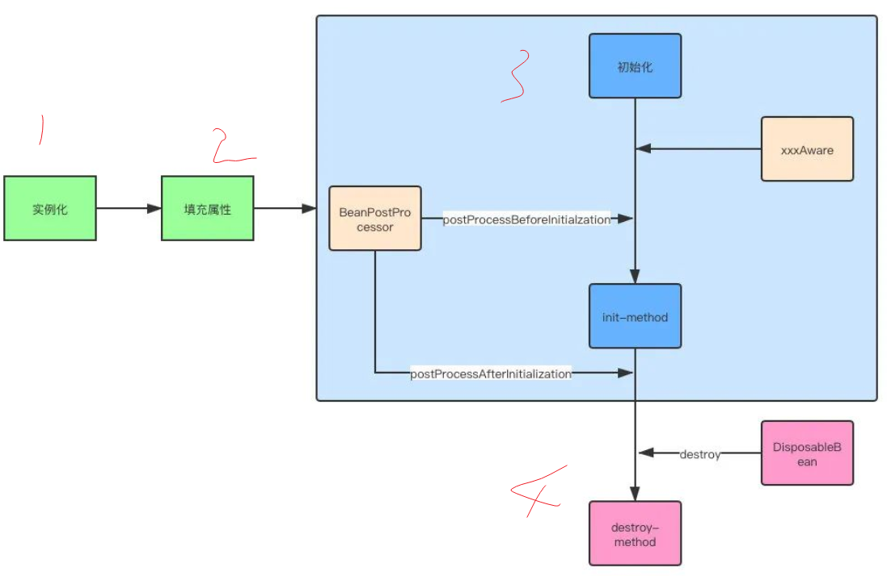
各个阶段的工作
- 实例化：创建Bean对象
- 属性赋值：调用Bean的set方法【设置属性值】
- 初始化：
- 如果实现了
xxxAware接口，通过不同类型的Aware接口拿到Spring容器的资源。 - 如果实现了
BeanPostProcessor接口，则会回调该接口的postProcessorBeforeInitialization和postProcessorAfterInitialization方法 - 如果配置了
init-method方法，则会执行init-method配置的方法
- 如果实现了
- 销毁
- 容器关闭后，如果Bean实现了
DisposableBean接口，则会回调该接口的destroy方法 - 如果配置了
destroy-method方法，则会执行destroy-method配置的方法
- 容器关闭后，如果Bean实现了
影响多个Bean的接口
InstantiationAwareBeanPostProcessorBeanPostProcessor
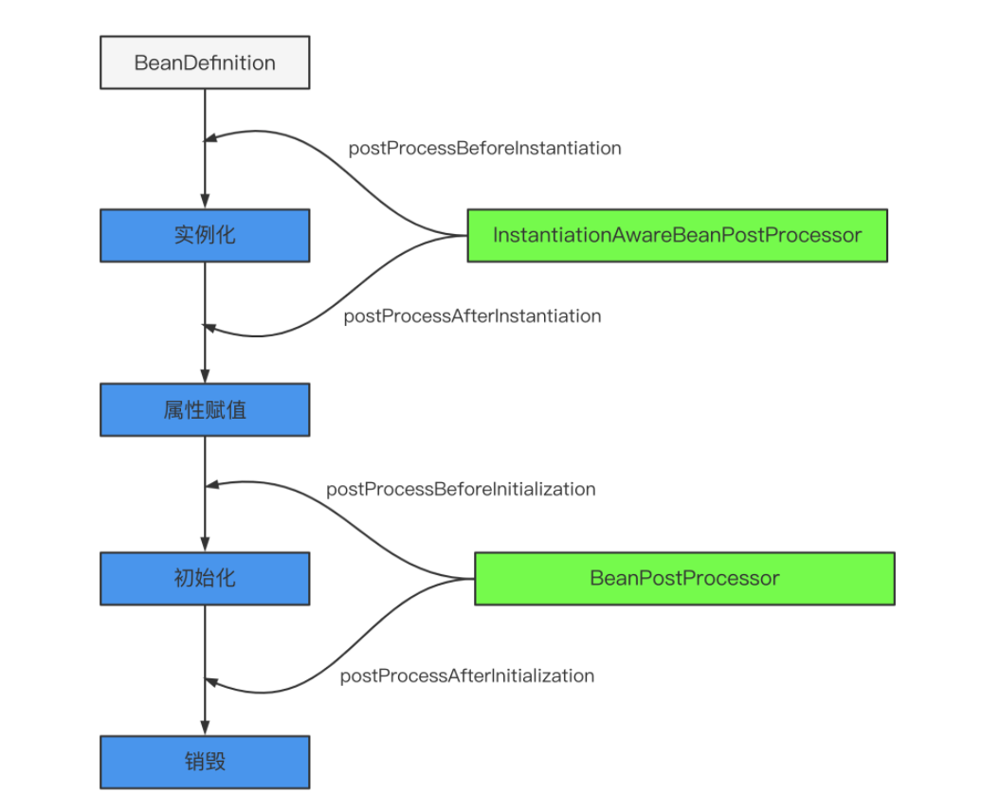
影响单个Bean的接口
- Aware类型的接口
- 生命周期接口
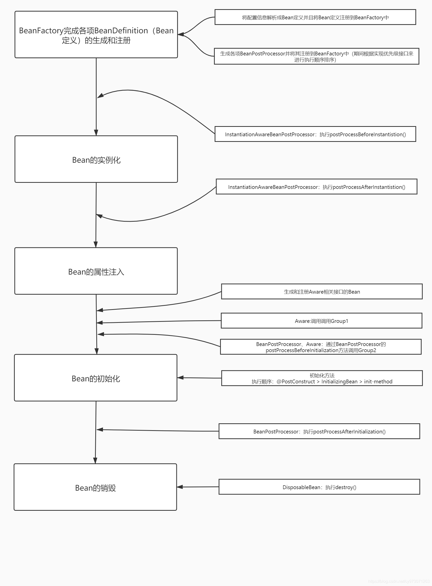
哪些是重要的生命周期方法
两个重要的生命周期方法：
setup：容器加载bean被调用teardown：容器卸载类的时候被调用
什么是Spring内部bean
当一个bean仅被用作另一个bean的属性的时候，它可以被声明为内部类。
内部bean可以用setter注入属性和构造方法注入构造参数，内部bean通常是匿名的，Scope为prototype。
什么是Bean装配
知道bean的依赖关系，容器通过依赖关系把bean装配到一起。
什么是Bean自动装配
在Spring框架中，用配置文件设置bean之间的依赖，Spring就可自动装配相互依赖的bean。容器无需配置就能通过bean工厂自动处理bean之间的协作。
Spring自动装配的方式
在Spring框架xml配置文件有5种自动装配：
- no：默认不自动装配，手工设置ref属性来装配bean
- byName：通过bean的名称进行自动装配，与prototype的值对应
- byType：通过参数的数值类型自动装配
- constructor：利用构造函数进行进行装配
- autodetect：自动探测
使用@Autowired自动装配过程
使用之前要在Spring配置文件进行配置 <context:annotation-config /> 。
启动Spring IoC的时候，容器自动装配了一个后置处理器，当容器扫描到@Autowied、@Resource或@Inject的时候，容器自动查找需要的bean，并装配给对象的属性。
- 如果查询结果唯一，bean装配给@Autowired指定的数据
- 如果查询结果多个，@Autowired会根据名称来查找
- 如果上述查找的结果为空，那么会抛出异常。解决方法时，使用required=false。
自动装配局限性
- 重写：需要重写自动装配
- 基本数据类型：不能自动装配简单的属性，如基本数据类型，String字符串和类
- 模糊特性：不如显示装配精准
FactoryBean 和 BeanFactory 的区别
- BeanFactory：是Bean工厂，ApplicationContext的父类，IoC容器的核心，负责生产和管理bean。
- FactoryBean：是一个Bean，通过实现FactoryBean接口定制实例化bean的逻辑。
循环依赖
有一个对象A内有属性对象B，对象B内有属性对象A。
创建对象A -> 处理A的依赖 -> 创建B对象 -> 处理B的依赖 -> 创建A -> 处理A依赖 -> 创建B ······无限循环。
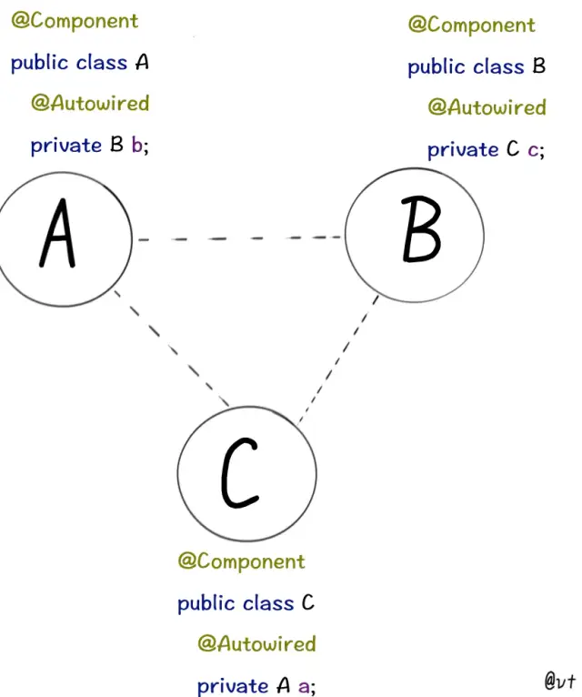
自己依赖自己
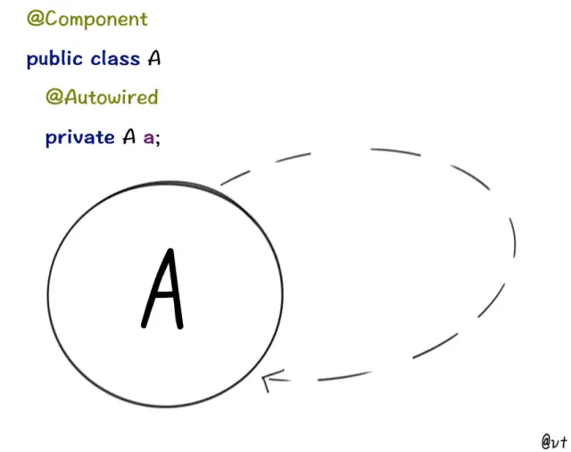
当我们注入对象A的时候，需要注入对象A标记了某些注解的属性，这些属性称为A的依赖，对象A中依赖初始化完成才算是A创建成功。
Spring三级缓存
singletonObject一级缓存：用于保存实例化、注入、初始化完成的bean实例earlySingletonObject二级缓存：用于保存实例化完成的bean实例singletonFactories三级缓存：用于保存bean工厂，以便后续扩展创建代理对象
循环依赖的主要场景
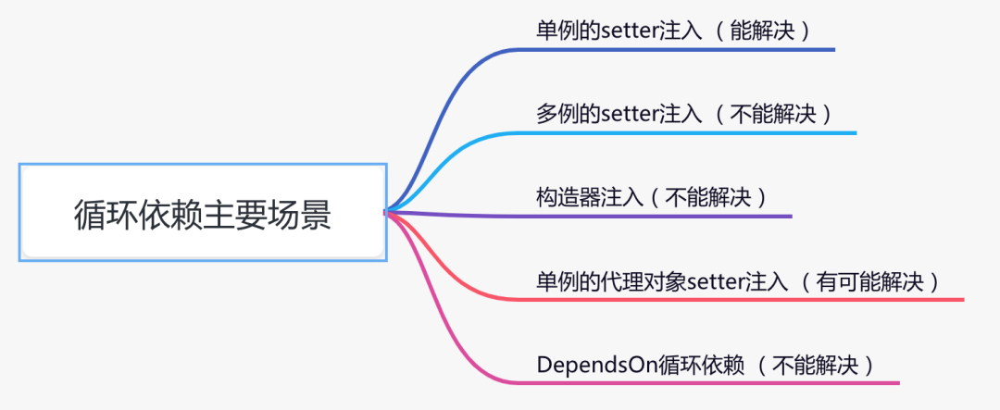
1、单例setter注入
@Service
publicclass TestService1 {
@Autowired
private TestService2 testService2;
public void test1() {
}
}
@Service
publicclass TestService2 {
@Autowired
private TestService1 testService1;
public void test2() {
}
}
解决方法
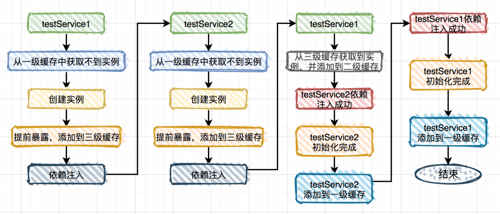
为什么要使用二级缓存：
因为三级缓存实际是一个objectFactory对象，并不是实例对象。 三级缓存不能用实例对象，因为需要对对象进行增强。
2、多例setter注入
在多线程场景下，经常出现
@Scope(ConfigurableBeanFactory.SCOPE_PROTOTYPE)
@Service
publicclass TestService1 {
@Autowired
private TestService2 testService2;
public void test1() {
}
}
@Scope(ConfigurableBeanFactory.SCOPE_PROTOTYPE)
@Service
publicclass TestService2 {
@Autowired
private TestService1 testService1;
public void test2() {
}
}
因为没有用到缓存，每次都会生成新的对象，所以循环无法解决。
3、构造器注入
@Service
publicclass TestService1 {
public TestService1(TestService2 testService2) {
}
}
@Service
publicclass TestService2 {
public TestService2(TestService1 testService1) {
}
}
执行过程
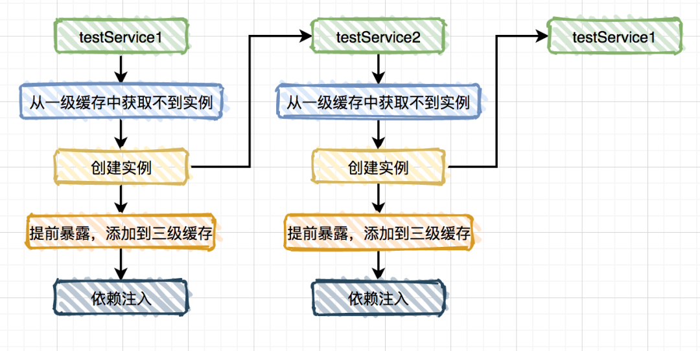
也没有用到缓存，所以无法解决。
4、单例的代理对象setter注入
@Service
publicclass TestService1 {
@Autowired
private TestService2 testService2;
@Async //使用AOP自动生成代理
public void test1() {
}
}
@Service
publicclass TestService2 {
@Autowired
private TestService1 testService1;
public void test2() {
}
}
执行过程
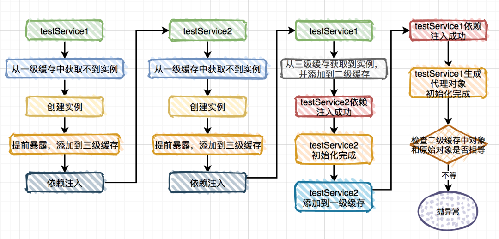
bean初始化完成后会把原始数据与二级缓存数据比较，不相等抛异常。
解决方法：修改TestService1为TestService5
因为bean的加载顺序是由文件完整路径递归查找，按照路径+文件名进行查找，2排在前先加载。
执行过程
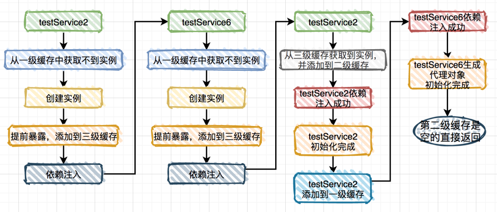
因为6无二级缓存，所以不会报错。
5、dependsOn循环依赖
一些特殊场景下，我们可以用注解@DependsOn注解要求先实例化谁。
@DependsOn(value = "testService2")
@Service
publicclass TestService1 {
@Autowired
private TestService2 testService2;
public void test1() {
}
}
@DependsOn(value = "testService1")
@Service
publicclass TestService2 {
@Autowired
private TestService1 testService1;
public void test2() {
}
}
@DependsOn注解虽然可以指定先实例化谁，但是底层会判断时候存在循环依赖，如上代码，出现了循环依赖，那么就会抛异常。
循环依赖的划分
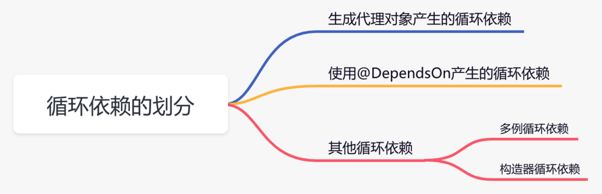
如何解决循环依赖（总结）
Spring可以解决的循环依赖有两个前提
- 不全是构造器方式的循环依赖
- 必须是单例
通过三级缓存来解决循环依赖
- 第一级缓存：保存实例化、初始化都完成的对象
- 第二级缓存：保存实例化但是并未初始化的对象
- 第三级缓存：保存实例化对象的所用的bean工厂
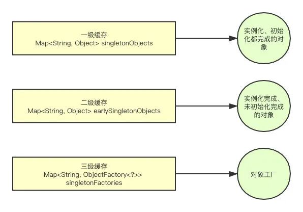
假设一个简单的循环依赖，A、B对象互相依赖
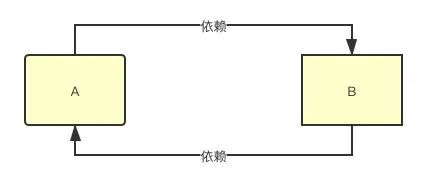
A对象的创建过程：
- 实例化A对象，把A的工厂存入第三级缓存 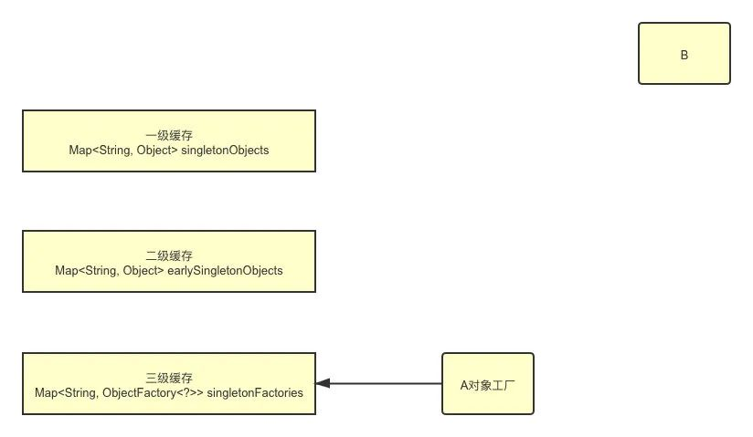
- A注入属性，发现存在B对象，去创建B对象
- 实例化B对象，注入的时候发现存在A对象，依次从1->3级缓存查找A，在第三级缓存拿到A，把A放进第二级缓存，同时删除第三级缓存里的A对象。B对象实例化、注入、初始化完成，把B放入第一级缓存。 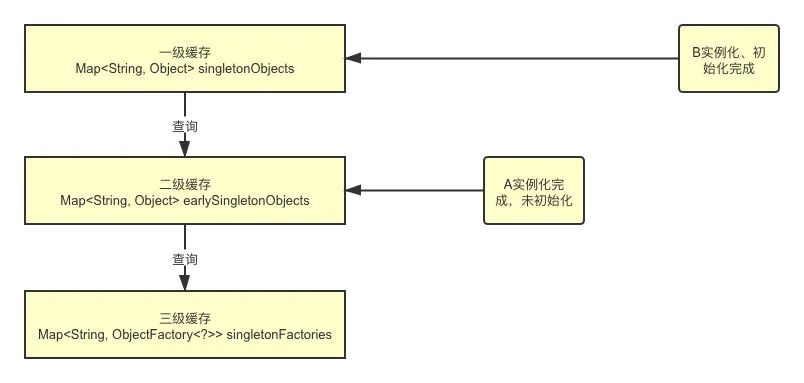
- 继续创建A对象，从第一级缓存中拿到B对象，A对象创建完成，删除第二级缓存里的A对象，把A放入第一级缓存
- 一级缓存保存着A、B对象 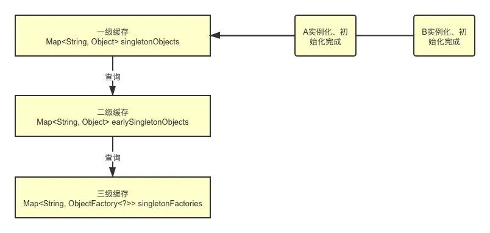
因为实例化和初始化流程分开了，所以如果用构造器，没办法分离两个流程，就无法解决循环依赖。
为什么要三级，二级不行吗
不可以，因为第三级缓存是构建了一个ObjectFactory对象，保证在生成代理对象的时候不会覆盖掉二级缓存中的普通bean。如果只有二级缓存就会覆盖掉，在多线程下很难保证数据一致。
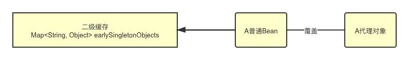
Spring 注解
什么是基于Java的Spring注解配置
基于Java的配置，使用少量的注解，代替大量的xml文件配置。
举例：
如@Configuration，标记一个bean，被Spring IoC容器使用。
@Bean，表示该方法要返回一个对象，作为bean用于Spring上下文。
@Configuration
public class StudentConfig {
@Bean
public StudentBean myStudent() {
return new StudentBean();
}
}
如何开启注解
注解装配默认不开启，需要在Spring配置里配置<context:annotation-config/>元素。
@Component、@Controller、@Service、@Repository 区别
@Component：用于将java类标记为bean。@Controller：用于标记为Spring Web MVC控制器@Service：用于标记为服务层，更好知名意图。@Repository：用于将DAO导入IoC。
@Required 注解有什么作用
明确bean的属性必须在配置的时候设置，如未设置则抛异常
public class Employee {
private String name;
@Required
public void setName(String name){
this.name=name;
}
public string getName(){
return name;
}
}
@Autowired 注解有什么作用
按照类型自动装配注入，要求依赖对象必须存在。
可用于构造方法、成员变量、Setter方法
@Autowired和@Resource之间的区别
@Autowired：按照类型装配注入，依赖对象必须存在@Resource：按照名称装配注入，找不到名称再按类型。
@Qualifier 注解有什么作用
有多个相同的bean时，指定使用哪个bean。
@RequestMapping 注解有什么用？
将http请求映射到控制器指定的方法或者类
- 类：映射请求的URL
- 方法：映射URL和Http请求方法
Spring 数据访问
对象/关系映射集成模块
Spring通过支持ORM模块，支持我们直接在jdbc上使用ORM映射工具。
Spring如何高效使用JDBC
使用Spring JDBC框架，减小操作失败的代价。集成JDBC的模板类。
spring DAO 有什么用
DAO被称为数据访问对象，使得JDBC等数据访问技术以一种统一的方式工作。
JdbcTemplate是什么
JdbcTemplate类提供了解决数据库数据和基本数据类型与对象之间的转换，执行写好可调用的sql语句，提供自定义错误处理。
Spring事务
事务的实现方法和原理
事务本质就是对数据库事务的支持，没有数据库事务支持，Spring无法提供事务功能。
真正数据库层的事务提交和回滚通过bin log和redo log实现。
Spring事务管理类型和实现方式
- 编程式事务管理：通过代码管理事务，灵活但是难管理。
- 声明式事务管理：业务层和事务管理分开，使用注解或xml配置管理事务。
什么是事务传播
事务传播是为了解决业务层方法相互调用的事务问题，当一个事务方法调用另外一个事务方法时，指定事务如何传播。
举例：
@Transactional public void methodA(){ jdbcTemplate.batchUpdate(updateSql, params); // A 事务调用 B 事务 methodB(); } // 不使用当前事务，创建一个新事务 @Transactional(propagation = Propagation.REQUIRES_NEW) public void methodB(){ jdbcTemplate.batchUpdate(updateSql, params); }
事务传播的7大值
propagation_required：如果当前没有事务，创建事务；如果当前有事务，加入事务。最常用。propagation_supports：支持当前事务。如果当前有事务，加入；如果当前没事务，以非事务执行。propagation_mandatory：支持当前事务。如果当前有事务，加入；如果当前没有事务，抛出异常。propagation_requires_new：创建新事务，无论当前有无事务。propagation_not_supports：以非事务方式执行。如果当前存在事务，挂起。propagation_never：以非事务方式执行。如果当前存在事务，抛异常。propagation_nested：如果当前有事务，嵌套在事务内执行；如果当前没有事务，以required属性执行。
事务的五大隔离级别
isolation_default：用底层数据库设置的隔离级别，数据库用什么我用什么。isolation_read_uncommitted：未提交读，最低的隔离级别，事务在提交之前，都可以其他事务读取（会出现脏读、幻读、不可重复读）isolation_read_committed：提交读，事务只有提交之后，才能别其他事务读取（会出现幻读、不可重复读）SQL Server 默认级别。isolation_repeatable_read：可重复读，保证多次读取同一值的时候，值都和事务开始时的内容一致，禁止读取到别的事务未提交的数据（会造成幻读）MySQL默认隔离级别。isolation_serializable：序列化，代价最高最可靠，能防止脏读、幻读、不可重复读。
- 脏读：一个事务读取到另一个事务还未提交的数据。
- 不可重复读：同一事务内，多次读取同一数据。
- 幻读：同一事务内，多次查询结果都不一样。
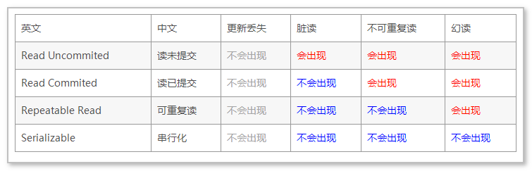
事务的失效场景
1. 只支持public修饰的方法
2. 用final修饰不生效
事务底层使用AOP，通过jdk或者CGLIB动态代理，生成代理类，对代理类添加事务，如果使用final修饰，在代理类中就无法重写该方法，而添加事务。
3. 同一个类的内部调用，不生效
@Servcie
public class ServiceA {
@Transactional
public void save(User user) {
......;
this.doSave(user);
}
@Transactional
public void doSave(User user) {
......;
}
}
因为生成代理类后，直接调用了this对象的方法，不会生成事务。
解决方法：
- 新加一个类
@Servcie public class ServiceA { @Autowired prvate ServiceB serviceB; public void save(User user) { ...... serviceB.doSave(user); } } @Servcie public class ServiceB { @Transactional(rollbackFor=Exception.class) public void doSave(User user) { ...... } } - 自己注入自己
@Servcie public class ServiceA { @Autowired prvate ServiceA serviceA; public void save(User user) { ...... serviceA.doSave(user); } @Transactional(rollbackFor=Exception.class) public void doSave(User user) { ...... updateData2(); } } - 通过AopContent类
@Servcie public class ServiceA { public void save(User user) { ...... ((ServiceA)AopContext.currentProxy()).doSave(user); } @Transactional(rollbackFor=Exception.class) public void doSave(User user) { ...... updateData2(); } }
4. 未被Spring管理
5. 多线程调用
6. 数据库引擎不支持事务
Spring框架下的事务管理的优势
- 为不同的事务API（JDBC、JTA），提供不变的编程模式
- 为编程式事务管理提供一套简单的API
- 支持声明式事务管理
- 和Spring的各种数据访问抽象层很好的集成
你更倾向于那种事务管理
更倾向于声明式事务管理。
声明式事务管理对应用代码影响最小，更符合无侵入的轻量级思想。虽然比编程式事务少了一点灵活，但是便于管理。唯一的缺点可能就是没办法像编程式事务管理一样做到对代码块进行事务管理。
Spring MVC 专题
面试题
什么是MVC
MVC是模型（model）、视图（View）、控制器（Controller）。他是一种将应用程序的业务逻辑和展示逻辑分开管理，实现松散耦合的框架。提供了良好的扩展性和可测试性，使得开发和维护Web应用变得简单高效。
什么是Spring MVC
是一个基于Java的实现了MVC设计模式的请求驱动类型的轻量级Web框架，通过把模型-视图-控制器分离，实现松散耦合，把负责的Web应用分为逻辑清晰的几个部分，简化开发，减少出错。
Spring MVC优点
- 可以支持各种视图技术，包括不仅仅jsp
- 与Spring框架集成
- 清晰的角色分配：前端控制器
dispatcherServlet、请求到处理器映射handlerMapping、处理适配器HandlerAdapter、视图解析器ViewResolver - 支持各种请求到资源的映射策略。
核心组件
- 前端控制器
DispatcherServlet（不需要程序员开发）
作用：请求接收、相应结果，相当于转发器，减少其他组件的耦合度。
- 处理器映射器
HandleMapper（不需要程序员开发）
作用：根据请求的URL查找Handle
- 处理适配器
HandleAdapter（不需要程序员开发）
注意：编写Handle的时候要根据HandleAdapter的规则，这样才能正常执行。
-
处理器
Handle（程序员开发） -
视图解析器
ViewResolver（不需要程序员开发）
作用：进行视图解析，根据视图逻辑名解析成真正的视图。
- 视图
View（程序员开发jsp等）
是一个View接口，实现类支持不同的视图类型（jsp、free marker）
什么是DispatcherServlet
Spring MVC是围绕DispatcherServlet设计的，用来处理所有的Http请求和响应。
什么是Spring MVC的控制器——Controller
提供访问应用程序的行为，控制器通过解析用户输入转换成视图呈现给用户的模型。Spring提供了抽象的控制层，允许创建多个控制器，多种用途。
Spring MVC的控制器是不是单例模式
是单例模式，在多线程访问的时候会出现线程安全问题，不要用到同步影响性能。解决方法是不在控制器里写字段。
工作原理
Spring MVC 工作流程
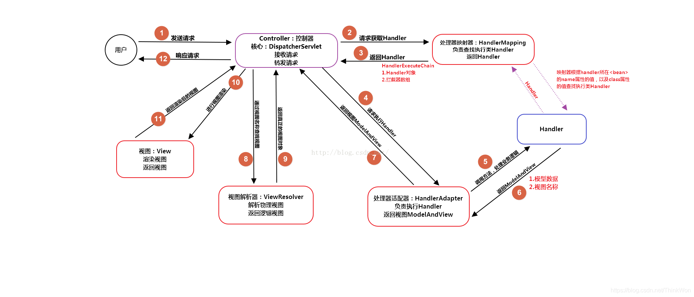
- 用户发送请求到前端控制器
DispatcherServlet - 前端控制器接收请求，调用处理器映射器
HandlerMapping，请求获取Handler - 处理器映射器根据请求的URL找到对应的处理器，生成处理器对象以及处理器拦截器，返回给前端控制器
- 前端控制器调用处理器适配器
HandlerAdapter - 处理器适配器调用对应的处理器-后端控制器
Handler - 后端控制器执行业务完成返回
ModelAndView - 处理器适配器把
ModelAndView返回给前端控制器 - 前端控制器把
ModelAndView传给视图解析器VierResolver - 视图解析器解析返回具体的视图
View - 前端控制器对
View进行视图渲染 - 响应给用户
MVC框架
什么是MVC框架
Model View Control 把模块-视图-控制器分开管理的一种设计模式。用于把前端页面显示和后端业务处理分离。
MVC框架有什么好处
- 分层设计，实现了业务系统各层之间的解耦，有利于系统的维护和扩展
- 系统并发开发，提高开发效率
常用注解
注解是什么
注解的本质是继承了Annotation的特殊接口，具体实现类就是Java的动态代理类。我们通过反射获得注解。
Spring MVC 常用注解
@Controller：用于定义控制器类@RequestMapper：通常后面加括号，内填写路径，用于处理请求url映射的注解，可用在方法和类上，用在类上则表示所有响应请求的方法都已该地址为父路径。@ResponseBody：把controller方法返回的对象转换成json响应给用户@RestController：@Controller+@ResponseBody@RequestBody：将接收Http请求的json转换成java对象@ControllerAdvice：统一异常处理@ExceptionHandler：用在方法上，表示出现这类异常执行这个方法
其他
Spring怎么设置重定向和转发
- 转发：在返回值前加
forward。如forward:user.do?name=method4 - 重定向：在返回值前加
redirect。如redirect:http://www.baidu.com
如何解决Post请求中文乱码问题，Get如何做
- POST请求：在web.xml中配置一个
CharacterEncodingFilter过滤器，设置UTF-8 - GET请求：重新编码或者修改tomcat配置文件
Spring MVC的异常处理
可以把异常抛给Spring框架，我们只需要配置简单的异常处理器，在异常处理器中添加视图页即可。
怎么在方法里获得Request 或 Session
直接在方法形参中声明。
怎么获得从前端传入的参数
直接在形参里声明参数，参数名保持一致
Spring MVC返回值
String、ModelAndView，一般用String。
用什么对象从后台向前端传数据
通过ModelAndView对象